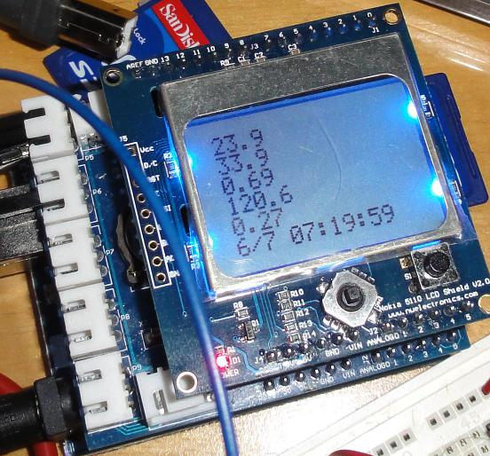

SD Card Logging Power Monitor with LCD
By John (OpenEnergyMonitor username: MaxAmp)
{kind=link}
|
|
 |
{kind=link}
{kind=link}
I combined two projects on this site with an LCD
Mains AC energy monitor v3.0 - basic setup
Data logging for wind speed (and DC current using invasive hall sensor)
and
In the center picture above, the proto board has the voltage and current circuit from the Mains AC energy monitor. The +5v, ground, voltage and current signals are connected into the data logging shield current to port P5 and voltage to port P6 (pdf here). I am using a 100A sensor (here). The LCD (enlarged in right picture above) is displaying from top to bottom: real power, appent power (almost the same as the watt meter which is enlarged in the left picture above), power factor, voltage (US 120V), current, date and time stamp. The data logging shield has a real time clock built in. To the right most edge of the data logging shield, an SD card is plugged in and data is logged in csv (comma seperated value format) file (see picture below). See attached file below for the source code. The main loop goes throgh a sequence of getting the time stamp, measuring power, sending data to serial output (USB port to computer), sending data to SD for logging, sending data to LCD. This sequence is repeated forever. When power up, it will wait for an SD card to be inserted. After the SD card is instered, there is currently no way to stop data logging or read SD card data from the arduino. Data is currently viewed from a computer. I used the offical arduino SD library built into arduino software here, the DS1302.h file for real time clock here, the nokia lcd library here, and the emon library here. I got the double to string conversion here. Note that this is my first time getting two SPI device working at the same time (SD & LCD). If you know of a better way to do it please post.

Re: SD Card Logging Power Monitor with LCD
Hi John,
Fantastic work! I love it. This will be of use for many people. Couple of minor things:
I like how you have posted on the forum then linked through to case studies, I think this is something we might begin to do in the future. Good for keeping things organised.
Keep up the good work!
All the best, Glyn.
Re: SD Card Logging Power Monitor with LCD
Thanks
Re: SD Card Logging Power Monitor with LCD
Thanks for making the changes. Looks great.
Glyn.
Re: SD Card Logging Power Monitor with LCD
Hello John,
I've run the last half year the following configuration:
Base station:
- Arduino mega2560 official arduino shield
- official SD card and ethernet shield
- LCD monitor (2x16 chars)
- RFM12 tranceiver
- DS1820 temperature sensor
--> master that logs the power / temperature from the slave(s) and also acts as a PID temperature regulator (for controlling the heaters). It acts also as a webserver:
- when request on client windows, it can send over the .csv logged file to the pc or delete it on the SD
- when rquest , it can send to the client pc a status page of the base station
- sets the time (via ntp)
Slave: jeenode with CT sensor (for power), based on openenergy 3.0 software + DSB1820 temperature sensor
On my pc, I use the emoncms database. Every day a task gets the csv file (from base station over ethernet), convert it to emoncms rows and insert the new entries in emoncms. I also have written some graphs in JPgraph to follow my energy use.
My experience with several devices on the same SPI bus:
when accessing the ethernet device (fe. send over a 30 MB csv file to the client pc), the mega hangs when receiving on the same time a RF pakkage. (it rarely happen, once a month), but is annoying. As it is a Mega2560, the internal WDT won't work and there are no alternative bootloaders yet available.
So: forsee the watchdogtimer when your processor hangs due to SPI issues.
Best regards,
Jeroen.
Re: SD Card Logging Power Monitor with LCD
Hi Jeroen,
Sounds like you have a great setup. Very very impressive.
Please could you could share your code and maybe a photo or two? I will then create a page for it in the build examples section. It would definatly be usefull to others. Or it would be fantastic if you did it yourself, this whole site is an editable wikki.
I'm afraid I dont have any experiance using a mega2560 so I can't really help you with your watchdog problems. Are you using the RFM12 library from JeeLabs?
We have receantly been working a PCB design for a unit called the emonTx. It is basicly exactly the same as what you have as your slave node: http://openenergymonitor.org/emon/emontx
All the best, Glyn.
Re: SD Card Logging Power Monitor with LCD
Hi Jeroen & John, I saw your thread and I belive you can help me.
I'm having some issues with EmonLib and SD (on the official Arduino Ethernet R3 Shield). It seems that there is some incompatibility between the EmonLib and the SD library. If I have any reading bigger than zero (ground) on the analog input and I try to use the SD on the same time the Arduino resets. Things go fine if reading is zero or if I'm not using the SD (sd card is not inserted).
My code is here: https://gist.github.com/mlemos/6258371
And my wiring is below.
Did you had any similar problem with the SD library?
I did tried my code on the MEGA to exclude any memory issues and I had exactly the same problem. :(
Any help is welcome.
;-)
Re: SD Card Logging Power Monitor with LCD
The above post has been answered here: http://openenergymonitor.org/emon/node/2709
Re: SD Card Logging Power Monitor with LCD
in the link below is my AC watt meter non invasive, which I follow the code from this site. IT can write data to SD Card modul, then we can extract data to excel to graph it. I dont have time to make instructions because it depend on your modul, library. But you can search the code on internet.
https://www.youtube.com/watch?v=PWSRRgSsLOQ